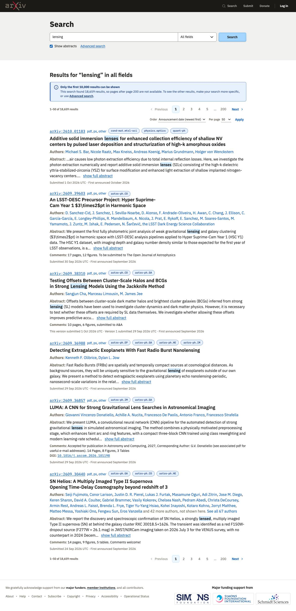
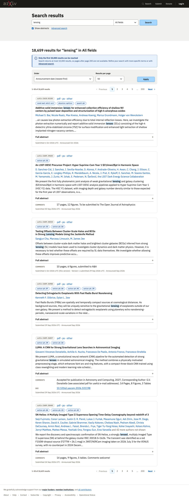
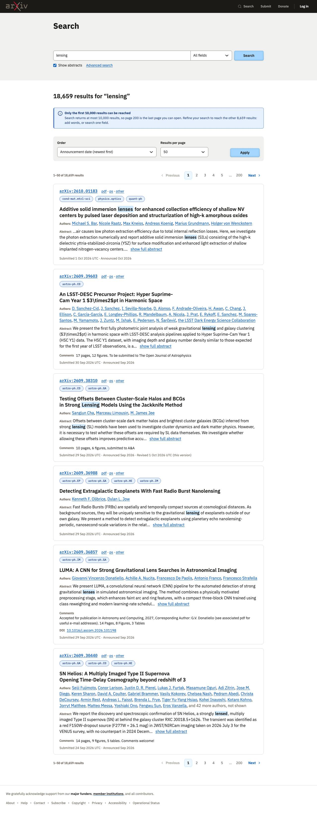
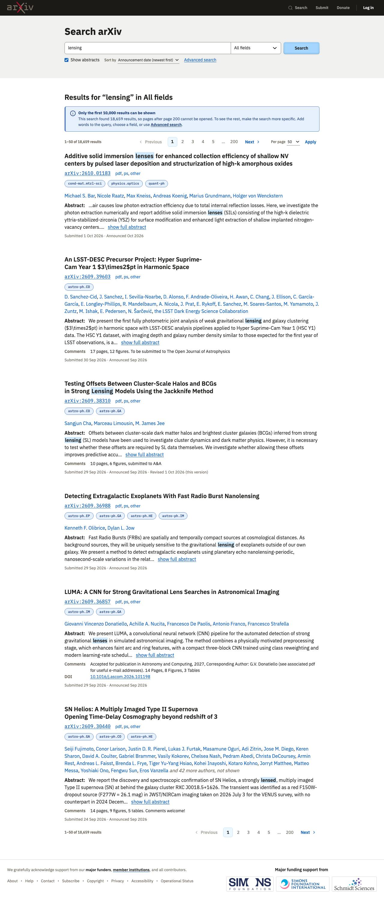

Search results
2026-10-02 · design system at commit 7b45c2c · the spec
Result
Every build used the new pieces as documented: the compact form with joined fields, the tinted band for the search, numbered pages with the range on the left, above and below the list, <mark> for matched words, the date row, and an alert for the 10,000 limit. No accessibility, contrast, overflow or outside-resource problems in any build. Shamsi rated all four 'accept with changes', against four rejections last round.
What is left is design, not conformance: where order and results per page go, how the pagination and the results are separated, and how one result is told from the next. One fault was mine: AGENTS.md still said results per page goes in a filter bar after pager.html had moved it into the pager row. Two builds noticed the conflict and chose differently. AGENTS.md is fixed.
Models: A and D are Opus 5.5, B and C are Sonnet 5.5. This time the Sonnet builds did not write more CSS (17 and 21 rules against 17 and 18). Both Sonnet builds put each result in a card; neither Opus build did.
Builds
| Build A | Build B | Build C | Build D | |
|---|---|---|---|---|
| Model | claude-opus-5-5 | claude-sonnet-5-5 | claude-sonnet-5-5 | claude-opus-5-5 |
| Pages |  Results (phone, dark) |  Results (phone, dark) |  Results (phone, dark) |  Results (phone, dark) |
| Shamsi: verdict | Accept with changes | Accept with changes | Accept with changes | Accept with changes |
| Shamsi: what is off | ReadI think it followed the DS well. But it is helping me notice some things in the DS we can improve: - The pagination at the bottom blends in with the results too much. We need a divider of some sort, I think. I don't believe more marging will be sufficient. - The filters for order and per page blend in too much with the rest of the pagination and it creates visual clutter. Perhaps filters need to be in a tinted bar. Maybe spread evenly across the bar. We should experiement a bit. Also, is it usual to have the filters above or below the pagination? I think it might work better if the filter were above the pagination, because the pagination feels more closely tied/related to the search results. - I believe the top pagination also needs a divider between it and the search results. Whatever we do for the bottom pagination should also have its counterpart on the top pagination. Look at other examples to see how other well build design systems handle this challenge. - An idea I want to explore: only the search results have a white background. Pagination, filters, errors, etc, are on the tinted backgrounds. - The search results blend together. We should experiment with a larger gap or a divider, or some other clear indicator that a new result is starting. Might an icon help? | ReadI like this better than Build A. The differentiation between the filters, the pagination, and the search results is clear. However, I don;t love having each search result in a bordered block, that feels too busy. Also, why is an accordion being used to show the full abstract instead of a show more link? I dont think that is a correct use of an accordion. Perhaps our documentation for accordions is deficient. Within result listings, the submitted date was put at the bottom but that info is really important to users and should be at the top. We might need to add information in the DS about what information related to papers users care about the most. We wont do this for all content, but the papers are so core to arXiv that I think it is worth the extra documentation. Something like the user-informed hierarchy for metadata. I like the use of pills for the categories. And the pill for the arXiv ID is also an interesting lead item that announces this is a new result, making the borders even less necessary. | ReadThis looks very similar to B, I don't see the difference. maybe there isnt any? It looks equally good but i also have the same critiques. | ReadPutting the filters on the same row as the pagination feels busy and may not be sustainable, depending on what filters a form needs to display. A seperate filter bar is more flexible. But I would like your thoughts. For this layout to work the numbered pager wold need to be more compact and show fewer numbers so it holds together more as a distinct grouping, or to be seperated in some other say from the other content (a border? a tint? more gap? centered? . Right now the next button sort of merges into the filter and that is confusing as a user. Of the filter results, I like the title leading best so far. It is a very important piece of info for users, and distinctly seperates each result from the previous one. My previous comments about the filter/pagination area needing a divider from the search results also hold for this page. Could we experiment with the full width tinted blocks for secondary content enclosing everything but the results? My only concern is what the page would look like before there are results, because at that point the search form is the primary content and might not look right on tinted. |
| Claude: technical verdict | Conformant | Conformant, with issues | Conformant, with issues | Conformant |
| Claude: technical notes | ReadOrder and results per page share one small form after Next, with one Apply. Results are separated by spacing only. No CSS overrides any design-system class. Abstract: Show more, full text without JavaScript. | ReadOrder and results per page in a filter bar. Each result is a card. The full abstract is in an accordion, which is the wrong component. Overrides the tooltip position and the filter bar's first field. Read the digests in docs/spec/, as in test 1. | ReadOrder and results per page in a filter bar settings group. Each result is a card. The result count is not announced to assistive technology. Restyles the category tag buttons and the tooltip body. It caught a fault in the sample data (a doubled DOI) and showed it once. | ReadSort order is under the search row; results per page is the form after Next. Each result opens with its title as a heading. No CSS overrides any design-system class. Took 29 minutes, most of it stalled, at normal cost. Did not look at its page in a browser. |
| Cost | $3.28 · 7 min · 3 files read | $1.71 · 6 min · 13 files read | $1.74 · 5 min · 10 files read | $2.58 · 29 min · 1 files read |


Last round: Simple search
 Build A: Reject Build A: Reject |  Build B: Reject Build B: Reject |  Build C: Reject Build C: Reject |  Build D: Reject Build D: Reject |
Shamsi: notes after seeing them together
All builds were better than the first round. Let me know what you think, and what the technical review found. I think our improvements to the DS are helping agents do better work.
What the builds had in common
- All four: no accessibility, dark contrast, overflow or outside-resource problems; no existing file changed; no colour outside the design system.
- All four used the compact form, the tinted band, numbered pages above and below the list, <mark>, the date row and an alert for the limit.
- Order went to four different places in four builds. The design system does not say where it goes.
- Results per page: two in the pager row, two in a filter bar. The docs contradicted each other (AGENTS.md against pager.html); fixed.
- Both Sonnet builds put each result in a card; both Opus builds used spacing.
- One build used an accordion for the full abstract; the docs do not say when Show more is right and an accordion is not.
- Two builds found that the date row assumes Submitted is version 1 and has no month-only announcement date.
- Two builds still moved the tooltip so it would not run off a narrow screen.
- Two builds took the header and footer from templates/, which is right.
- The sample data had a doubled DOI, from my extraction. Fixed for any rerun.
- Predictions: right on the compact form and numbered pages, on <mark>, on order splitting, and on cards. Wrong on results per page (two, not three or more, in the pager row) and on Sonnet writing more CSS.
What we changed in the design system
- AGENTS.md: results per page is the small form after Next in the numbered pager row (it contradicted pager.html).